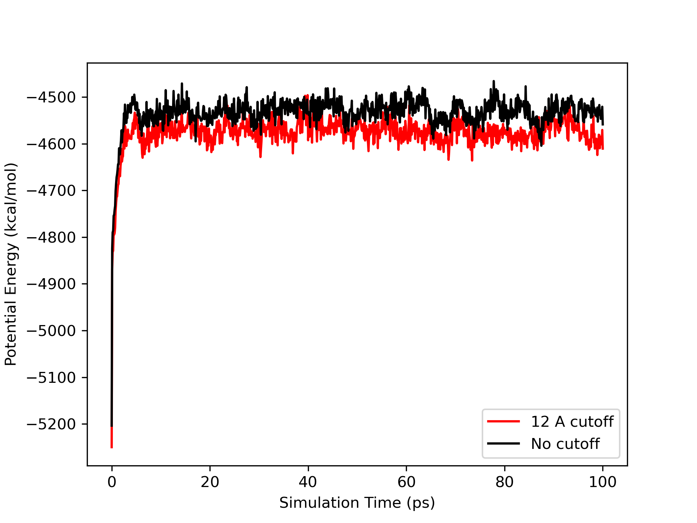
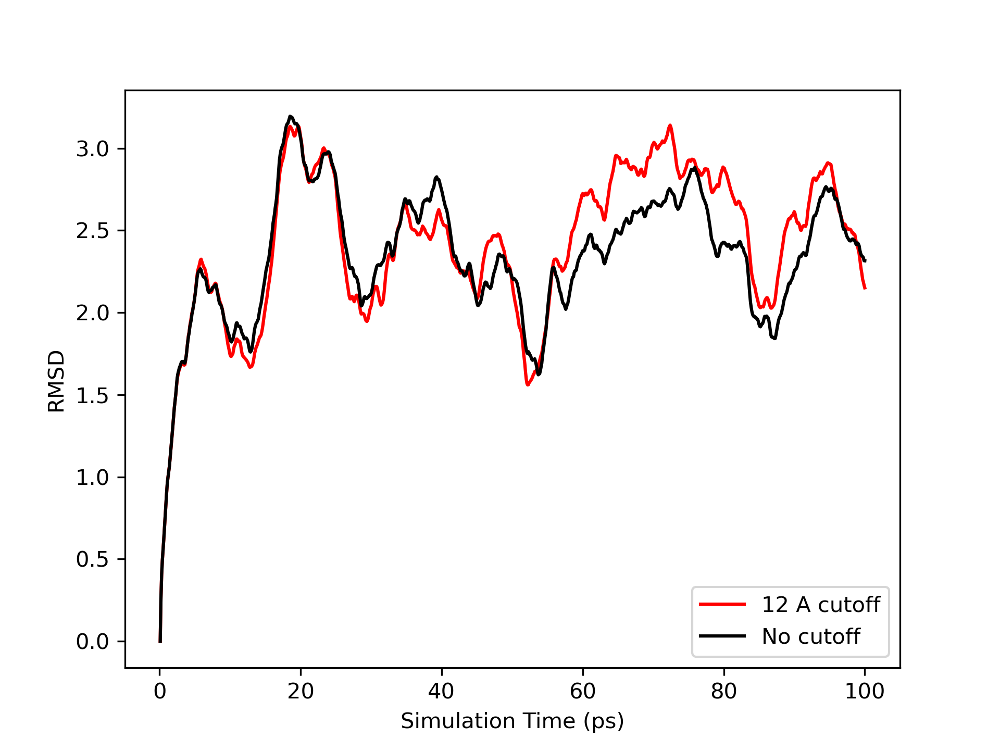

Analyzing the Results¶
The first thing you should notice about the two generalized Born simulations is that they both completed successfully.
The inclusion of solvent in the model has stabilized the DNA.
Lets compare the potential energies of the two runs, 12 angstrom cutoff and no cutoff. We will use the process_mdout.perl script.
mkdir dodecamer_gb_md1_12Acut
mkdir dodecamer_gb_md1_nocut
cd dodecamer_gb_md1_12Acut
process_mdout.perl ../dodecamer_gb_md1_12Acut.out
cd ../dodecamer_gb_md1_nocut
process_mdout.perl ../dodecamer_gb_md1_nocut.out
After completing the commands above, you will have the outputs for all of the energies from the simulations in their own folders. Similar to before, create a plot that shows the total potential energy vs time step for each simulation. You will see a graph similar to the following
The first thing you should notice is that the plots are now very similar. The cut off value has made much less of a difference than it did in vacuo. Lets see what difference there is in the RMSd.
Perform the RMSD analysis using cpptraj.
parm dodecamer_vac.prmtop
trajin dodecamer_gb_md1_12Acut.nc
rms first mass out dodecamer_gb_md1_12Acut.rms time 0.1
go
parm dodecamer_vac.prmtop
trajin dodecamer_gb_md1_nocut.nc
rms first mass out dodecamer_gb_md1_nocut.rms time 0.1
go
Plotting the RMSD data, you will see a graph similar to the following:
Notice how both simulations are much more stable than the vacuum case. You should also observe how similar the RMSd fits are. Thus we see that the use of a cutoff here has far less influence on the results. It does, however, make a big difference to the time required for the simulation, especially when we use explicit solvent as we will find in the next section. On a single processor 3.0 GHz Intel Core i7, the no cutoff simulation took 2,001 seconds while the 12 angstrom cutoff simulation took 1,516 seconds, an increase in efficiency of 24 %. However, it is important to realize that the use of a cutoff here, due to the fact that there is no calculation of long range electrostatics as in an explicit solvent calculation, is still introducing additional approximations into the calculation. Thus if you can afford it, you should consider running implicit solvent GB simulations without a cutoff.
Note: the RMSd is still quite large, however, typically we would want our RMSd to be less than 1.5 - 2 angstoms. We will see in a minute that the use of explicit solvent, and more importantly, periodic boundary techniques can improve the simulation still further.
Visualization¶
Follow the same procedure from the section on visualization from the vacuum section for your 12 angstrom and no cut off simulations.